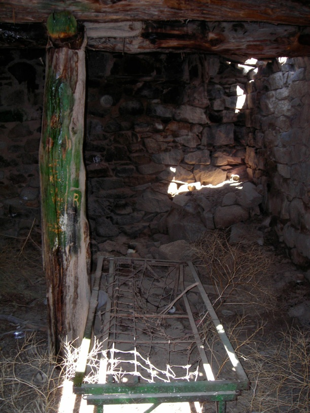

Cherry Creek Reprise I
Friday, March 27, 2009
Matt, Steve, Eric and I headed out for another afternoon at Cherry Creek. Yesterday it snowed in Utah Valley, but today it was beautiful and sunny with only a few clouds in the sky. At the start of our ride in the early afternoon the temperature was 36 F, and it gradually warmed to the low 40’s. In other words, the temperature was perfect!
Steve and Matt getting ready to roll. Eric is already off riding around the area.
Matt warming up his bike, a 1994 Yamaha YZ250
On the trail stopping for a quick break to enjoy the few trees in the area. Perhaps this was an old homesteader’s plot?
Eric decided to go around the mud & ice pit (thanks, Eric!) and here is Steve following
Now I’m coming through
We’re ready to go again

We just finished coming up this wash. It doesn’t look like much from the top here, but it is an absolute blast when you are riding up it.
Note the grins on everyone’s faces--yes, it was a fun wash!
Here we have arrived at an old cabin on a mining claim from maybe the late 1800’s or early 1900’s.
It looks like the walls consist mostly of just stacked up rock
A view of the inside. Hmm, nice accommodations--even has a bed!

At this point we headed back to the truck so that Matt could get more gas. We had put in 22 miles and wanted to make sure he didn’t run out during the latter part of the ride
Here is Matt with his bike. Note that his jersey is intact at this point.
Let’s take a closer look at his rear tire

Notice anything strange about it? Like, where are the knobbies?? That thing is a slick!
And yet, Matt can climb just about anything, including this very steep hill covered with loose dirt and rocks. Perhaps knobbies are overrated? Matt is barely visible near the center of the picture below. As usual, pictures just don’t do justice to giving an idea about how steep a hill is.

Here he comes. He’s even got enough traction to get the front wheel a little off the ground.
Ooops, now the tire is spinning...
But he makes it anyway
To be continued...